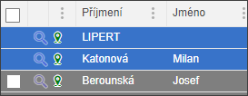
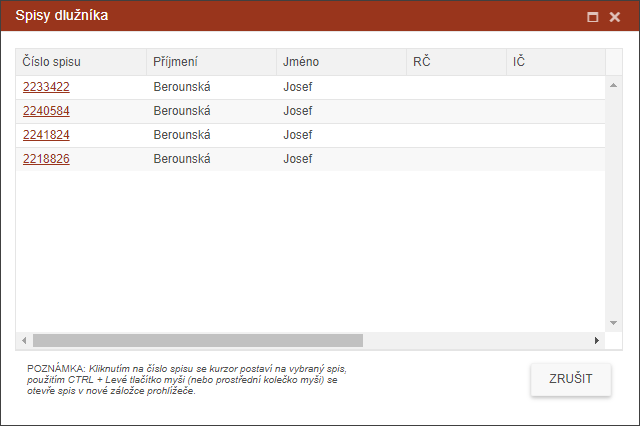

Informace ke spisu
Pro zjištění informací k dlužníkovi slouží ikonka lupy v každém řádku adresy dlužníka.

Kliknutím na tuto ikonku se zobrazí dialog, ve kterém jsou vypsány všechny spisy dlužníka.

Kliknutím na číslo spisu se zruší současná záložka trasace a bude zobrazena záložka, ve které se daný spis nachází. Tam se kurzor postaví na vybraný spis a zobrazí se detail spisu.
Použitím CTRL + Levé tlačítko myši (nebo pouze stisknutí prostředního kolečka myši bez klávesnice) se ta samá záložka otevře v novém okně prohlížeče. Tam se kurzor postaví na vybraný spis a zobrazí se detail spisu.